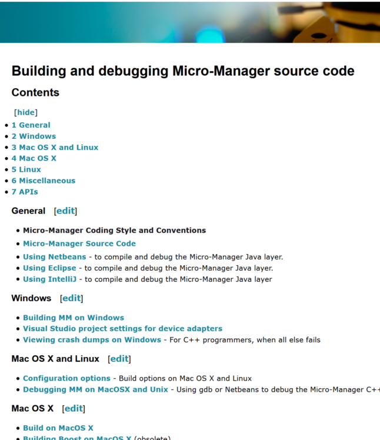
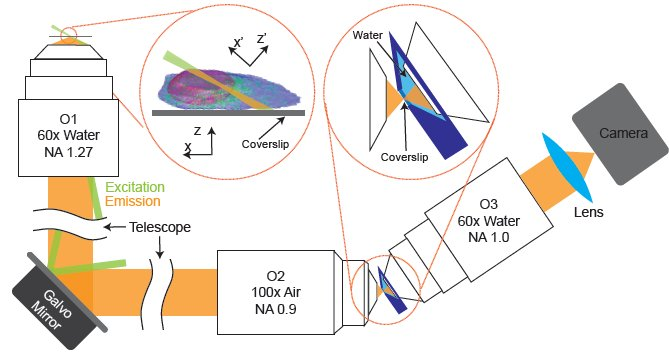
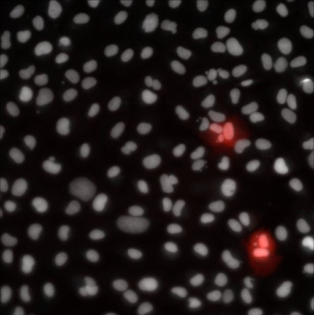
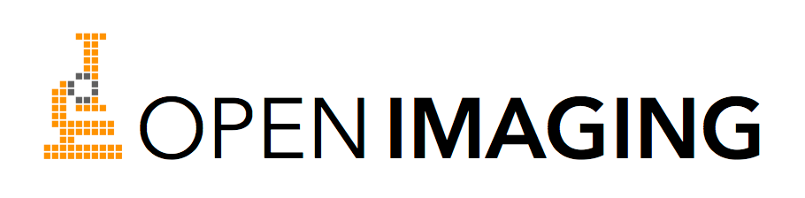

Software control of microscopes, perspective of a cell biologist
Janelia 2020, Nico Stuurman, Vale lab, UCSF/HHMI
github.com/nicost/reveal.js branch: janelia2020


Wikipedia, CC BY-SA4.0 Padouppadoup

Software control of microscopes, perspective of a cell biologist


Janelia 2020, Nico Stuurman, Vale lab, UCSF/HHMI
github.com/nicost/reveal.js branch: janelia2020
Building out an idea (2005)

- de novo (C, Java, Pyton)
- use Toolboxes (Matlab, Labview)
- Commercial software
Free, Open Source, Extensible, Cross-Platform

Nenad Amodaj
Needed working proto-type fast
Nenad Amodaj


Supported by the Sandler Foundation
Device abstraction

Generic, Camera, Shutter, Stage, XYStage, StateDevice, Serial, Autofocus, ImageProcessor, SignalIO, Magnifier, SLM, Galvo, Hub

> 100 authors
industry + academia
> 1 per month added
industry + academia
> 1 per month added
Well-separated interfaces matter
C++ gives longevity


Mark Tsuchida


Henry Pinkard
Multi-page TIFF
Stores MM, OME, and ImageJ metadata
Needs to be fast and forgiving
Stores MM, OME, and ImageJ metadata
Needs to be fast and forgiving
Generates sequence
of actions
of actions


Arthur Edelstein
Avoid niche programming languages


Affine registration

EMU Plugin

Joran Deschamps (EMBL)
Support is Essential
Distribute an application installer
Mailing list (will move to forum)


μManager Use
3 μManager publications were cited 1958 times
Enabling cool stuff: OpenSPIM


Pavel Tomancak
Enabling cool stuff

Jon Daniels (ASI)

Enabling cool stuff
Bin Yang (Bo Huang Lab), UCSF

Henry Pinkard
μMagellan

High-Speed export of Java API though ZeroMQ "socket".
Python client
Python client
Cell marking by photo-conversion
Xiaowei Yan

Cell marking by photo-conversion
Xiaowei Yan



Finances
Started with Sandler Foundation grant
7 years of NIH R01 funding (2008-2015)
Mark Tsuchida
Two companies: 100xImaging, and Open Imaging

Now at Univ. of Wisconsin, Madison, with Kevin Eliceiri (grant from CZI)
Tensions
Maintainable software architecture
Cool new features
Easy, general UI
"hackable" code
Performance
Generic functionality
Relation to commercial software
Thanks!
Ron Vale
Multiple generations of Vale Lab members
μManagers:
Nenad Amodaj
Arthur Edelstein
Oleksiy Danikhno
Karl Hoover
Henry Pinkard
Ziah Dean
Mark Tuschida
Chris Weisiger
Oleksiy Danikhno
Karl Hoover
Henry Pinkard
Ziah Dean
Mark Tuschida
Chris Weisiger
Many, many code and documentation contributions from scientists, enthusiasts, and companies.
Previously supported by grants from the Sandler Foundation and NIH (NIBI) R01EB007187, currently by a grant from the CZI